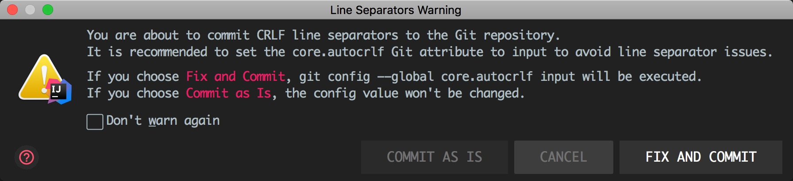

10. Git问题¶
如题所述，下面的问题可能真的是git(傻瓜)问题
0、git pull 和git clone有什么区别？
从远程服务器克隆一个一模一样的版本库到本地,复制的是整个版本库，叫做clone.（clone是将一个库复制到你的本地，是一个本地从无到有的过程）
使用该命令，会将远程的所有版本和分支都clone到本地。
从远程服务器获取到一个branch分支的更新到本地，并更新本地库，叫做pull.（pull是指同步一个在你本地有版本的库内容更新的部分到你的本地库）
使用该命令，相当于做了
git fetch和git merge的操作，也就是先拉取代码再合并到本地如果是刚介入项目，也就是你想参与项目并在某个分支上创建你自己的分支，你使用
git pull是不行的，你得使用git clone克隆一个完整的和远程仓库一样的版本库到本地
1、git提交代码报“You are about to commit CRLF …”错误
当我在把Windows写好的代码文件直接拷贝到macOS下面，进行提交代码的时候(在macOS上提交代码)，会报此错误

上面已经提示了点击Fix and commit可以解决
当然需要知道为什么了，去这里一探究竟